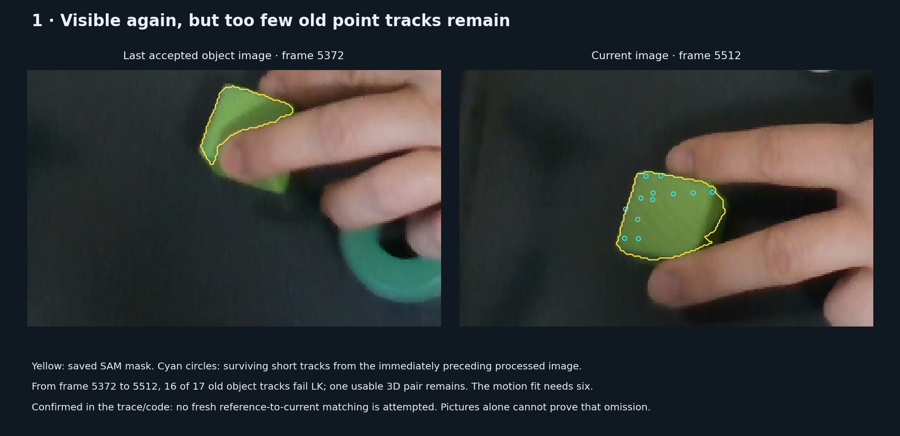

FLASH recovery: what failed, and what helps
Regression: 11 lossless frames, 6.4 MiB. Real image matching, motion groups, surface fitting, Kalman pose updates and surface map updates. Saved SAM masks and model depth; no video needed.
Production translation initialization is now implemented. Cube and pointer recovery pass, including complete loss of image tracks and the wrong-object control. The fitter compares the original translation with one aligning the measured surface centres and uses the lower geometry cost for one solve. The separate ring Kalman-fusion failure remains. The live server was not restarted.
The screenshots and experiment table below describe the original implementation at 9ff25cf80. The updated full-history replay observes 315 of 400 updates; this measures availability, not pose accuracy. Implementation verification.
Group-depth rejection is implemented and measured. At frame 5381, all 15 stale cube memberships are removed and the unsupported background-group pose hint is cleared. Current LK measurements remain available. Added depth work: 0.66 ms median, 0.94 ms p95. Alternating the versions per frame across six paired replays shows a median 0.60 ms increase in total processing time; the initial apparent speedup did not reproduce. Method, regression and results · Follow-up timing summaries.
Current regression cases and results (Markdown) · Tracking glossary — definitions and code citations (Markdown)
The five panels show interacting failure mechanisms, not five independent root causes. Relationship between the failures · Endpoint filter and sampling audit.
A point track ID labels one tracked image point. The object is visible. Replaying frames 5372–5512 shows 16 of 17 old object tracks fail LK; one usable 3D pair remains, below the six required for motion fitting. The shared path does not attempt fresh matching between these images.

Click the image to open it at full size. These are actual camera frames with replay-derived overlays. Screenshots use the original full history; compact tests initialize freshly.
Original experiments before the production translation fix
| Intervention | Sparse cube / pointer | After all old point tracks are lost | Ring rejection |
|---|
| Existing LK pipeline | Fails | Fails | Fails |
| UFM, existing pipeline | Recovers both | Still fails both | Still fails |
| UFM + fresh matching to accepted image | Recovers both | Recovers both: 145 / 108 validated pairs | Still needs filter change |
| LK + surface recovery + filter reset | Recovers both | Recovers both without temporal pairs | Recovers |
| UFM + fresh matching + filter reset | Recovers both | Recovers both | Recovers |
The complete-loss experiment deliberately supplies one black image with empty mask/depth. The original recording is kept separate. Both recovered location and subsequent reference/map updates are checked.
Longer replay: all 404 original statuses reproduce on the baseline. Across 400 subsequent updates, the baseline observes 216; the LK surface-recovery experiment observes 400; UFM rematching observes 399 and predicts once. These are availability counts, not pose-accuracy scores.
Exact 6D orientation remains unlabelled. UFM frame 3491 still rejects its fused pose and retains a compatible prediction. A general fix needs broader checks for wrong objects and ambiguous poses before adoption.
Scope, commands and verification · Measured experiment results · Frame traces